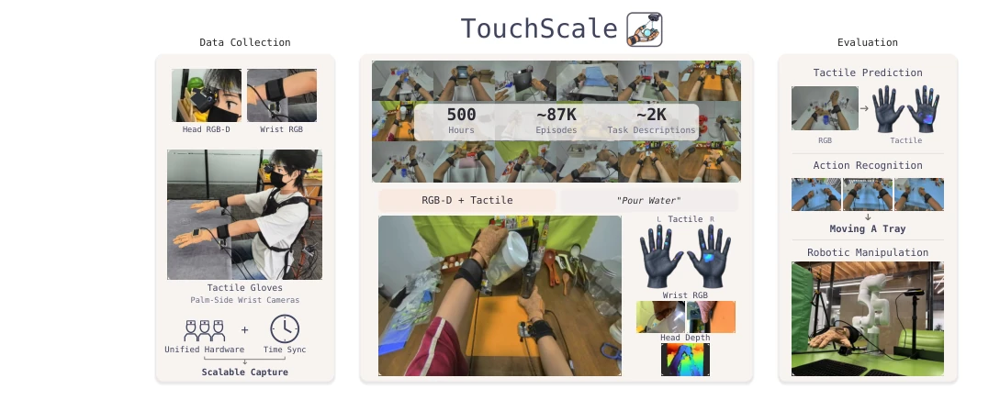
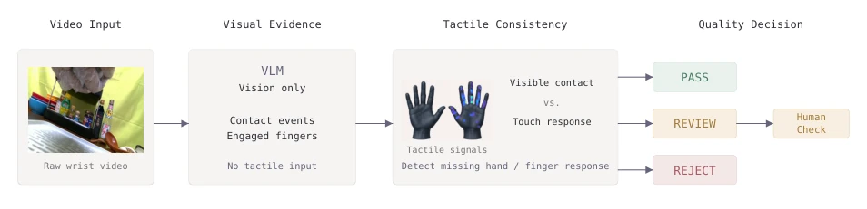
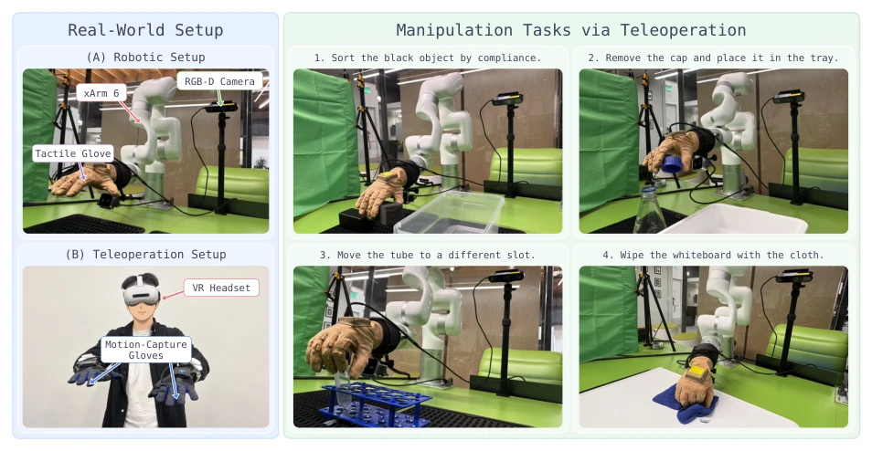
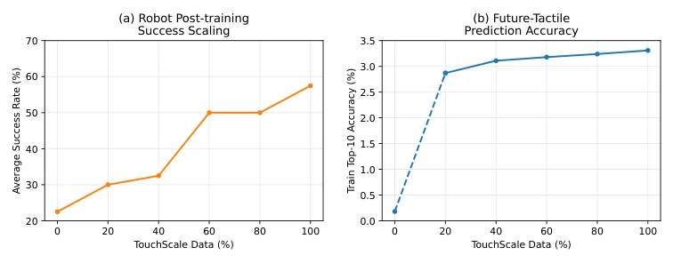
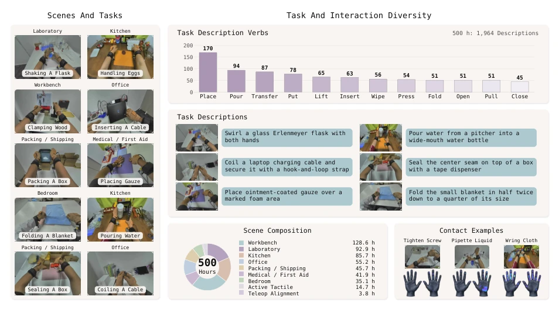
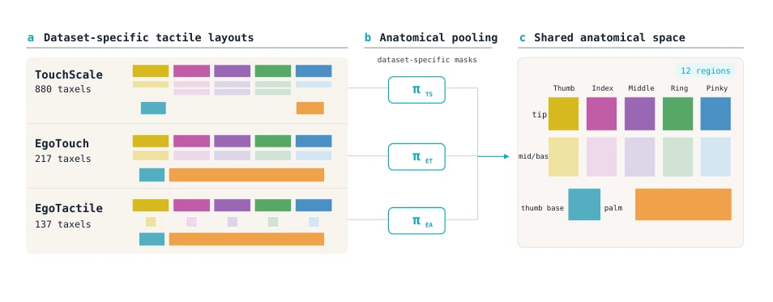
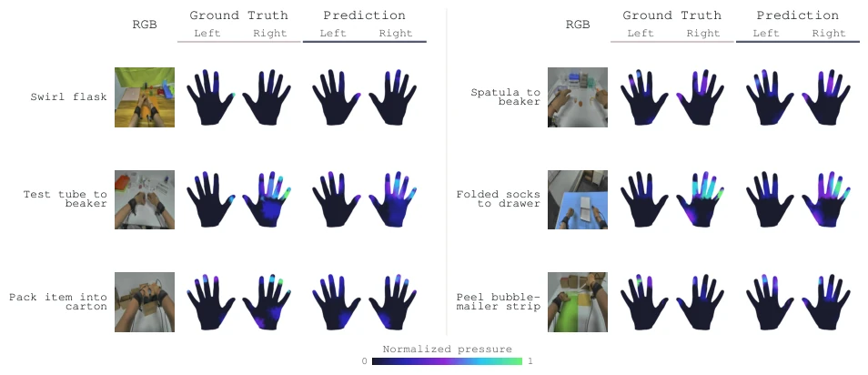
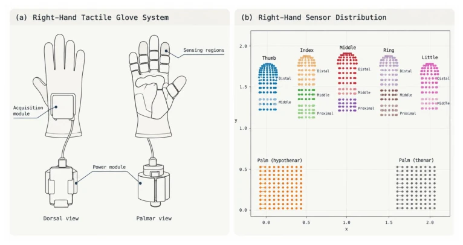

具身智能需要物理交互监督，但纯视频录不到接触和压力。现有视觉 - 触觉数据集（如 EgoTouch, EgoTactile）通常少于 30 小时，且传感器或标注流程不一致（Zhou et al., 2026b; Zeng et al., 2026），导致无法隔离数据规模的影响。此外，现有最大资源常合并不同传感器或标注流程的记录，使得数据规模的影响难以隔离。虽然有人类视频 scaling 趋势的研究（Kareer et al., 2025），但触觉数据在统一感知管道下达到数百小时的效果尚不清楚。作者旨在填补这一空白，验证大规模、一致感知的视觉 - 触觉数据是否对感知和机器人控制有益。
—

Figure 1 Overview. TouchScale is a large-scale human visual–tactile dataset collected with a unified wearable system. Capture: Human interactions are recorded with synchronized head RGB-D, wrist RGB from both hands, and bimanual tactile measurements. Dataset: TouchScale contains 500 hours of data, approximately 87K episodes, and approximately 2K task descriptions spanning diverse everyday interactions. Evaluation: We evaluate it on tactile prediction, action recognition, and robotic manipulation.
Figure 2 TouchScale data collection. Left: the unified wearable setup used throughout the collection, consisting of a head-mounted RGB-D camera, two wrist-mounted RGB cameras, and bimanual tactile gloves. Right: time- aligned observations from an example interaction, including head RGB-D, bimanual wrist RGB, and bimanual tactile measurements at different stages of the task.

Figure 10 Postprocessing for data quality. Contact events and engaged fingers are first identified from wrist video without tactile input, then compared with tactile responses to detect missing signals. The resulting consistency check assigns PASS, REVIEW, or REJECT, with uncertain cases sent for human inspection.
Figure 4 Scaling of zero-shot tactile prediction. Increasing TouchScale training data generally improves zero-shot performance on EgoTactile across contact, localization, and pressure metrics.

Figure 5 Real-world robot setup and manipulation tasks. Left: the xArm6 platform with a BrainCo Revo 2 robotic hand, tactile sensing, and an external RGB-D camera and a wrist camera, together with the teleoperation setup used to collect robot demonstrations. Right: four contact-rich manipulation tasks covering material-dependent sorting, small-object manipulation, precise transfer, and sustained surface contact. We collect 50 teleoperated demonstrations for each task.

Figure 6 Scaling of TouchScale mid-training. Left: average post-training success rate across four real-world manipulation tasks with different amounts of TouchScale mid-training data. Right: future-tactile prediction accuracy on robot data unseen during TouchScale mid-training.
其他图片Other Figures

Figure 3 Task and interaction diversity in TouchScale. Left: representative tasks across different collection settings. Right: task-description verb frequencies, example task instructions, the collection-setting composition of the 500-hour dataset, and representative tactile contact patterns.

Figure 7 Cross-sensor anatomical mapping. Dataset-specific anatomical assignments pool the TouchScale, EgoTouch, and EgoTactile tactile layouts into the same 12 anatomical regions for cross-dataset evaluation.

Figure 8 Qualitative tactile prediction. Across diverse human interactions, the predictions closely reproduce the ground- truth contact regions and pressure distributions for both hands, showing consistent tactile prediction across objects and interaction patterns.

Figure 9 Tactile glove hardware. The Tachin Glove used in TouchScale contains an acquisition module on the dorsal side, while tactile sensing regions cover the five fingers and palm on the palmar side. The glove is connected to an external power module for wearable tactile recording.